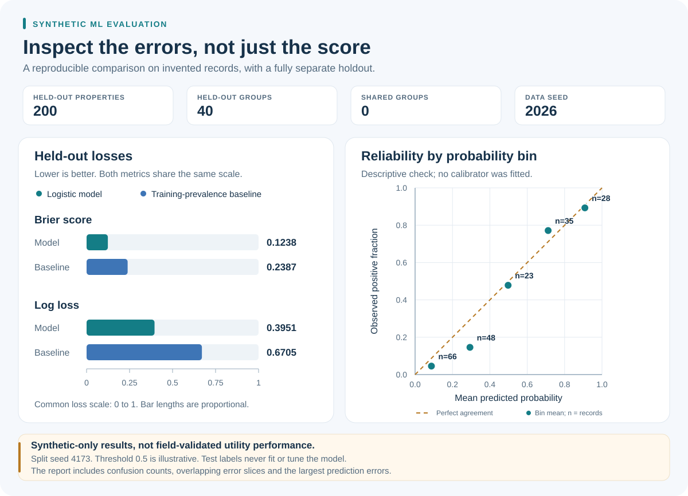

Synthetic, reproducible example
Try a small prediction example
Run a simple model on invented records and compare its predictions with the known answers.
Entirely synthetic educational companion, not the original TF-IDF/gradient-boosting prototype, field validation, verified material classifications, or evidence of savings.
Run it locally
Python 3.10 or newer. Standard library only; no accounts, credentials, or external datasets. From the repository root:
python examples/lead-pipe-synthetic/demo.py
python -m unittest discover -s examples/lead-pipe-synthetic -p test_demo.py -vRecorded demonstration results
These are outputs of the included teaching example, not measurements of a client system or field accuracy.
- Held-out properties
- 200
- Held-out groups
- 40
- Shared groups
- 0
- Model Brier score
- 0.1238
{kind=link}

| Predictor | Brier score | Log loss | Accuracy at 0.5 |
|---|---|---|---|
| Logistic model | 0.1238 | 0.3951 | 0.8300 |
| Training-prevalence baseline | 0.2387 | 0.6705 | 0.6350 |
| Predictor | True negative | False positive | False negative | True positive |
|---|---|---|---|---|
| Logistic model | 110 | 17 | 17 | 56 |
| Prevalence baseline | 127 | 0 | 73 | 0 |
| Probability interval | Records | Mean prediction | Observed positive fraction |
|---|---|---|---|
| [0.0, 0.2) | 66 | 0.0873 | 0.0455 |
| [0.2, 0.4) | 48 | 0.2935 | 0.1458 |
| [0.4, 0.6) | 23 | 0.4977 | 0.4783 |
| [0.6, 0.8) | 35 | 0.7119 | 0.7714 |
| [0.8, 1.0] | 28 | 0.9084 | 0.8929 |
| Slice | Records | Brier score | False positive | False negative |
|---|---|---|---|---|
| Age present | 178 | 0.1194 | 15 | 15 |
| Age missing | 22 | 0.1588 | 2 | 2 |
| No conflicting record | 168 | 0.1170 | 13 | 14 |
| Conflicting record | 32 | 0.1590 | 4 | 3 |
| Synthetic property | Simulated target | Prediction | Age missing | Record conflict |
|---|---|---|---|---|
| synthetic-group-120-property-001 | 0 | 0.8983 | No | No |
| synthetic-group-049-property-002 | 0 | 0.8978 | No | No |
| synthetic-group-099-property-003 | 0 | 0.8853 | No | No |
| synthetic-group-117-property-000 | 1 | 0.1313 | No | No |
| synthetic-group-078-property-004 | 1 | 0.1372 | No | No |
Interpretation and limitations
- All 800 records, group IDs, evidence and target labels are invented; signal is intentionally learnable.
- Fixed seeds: data 2026, split 4173. Whole-group 75/25 split; no shared groups or properties.
- Features and training settings were fixed before evaluation. No tuning, threshold choice or calibration uses test labels.
- Reliability bins describe this one synthetic holdout; they do not establish calibrated probabilities.
- The 0.5 threshold is illustrative, not an approved material classification or inspection rule.
- Age and record-conflict slices overlap; small slices have unstable estimates. No confidence intervals are claimed.
- Real evaluation needs verified labels and spatial, temporal and cross-utility holdouts; this example has none.
- This companion is separate from the original professional OCR effort and any historical cost savings.